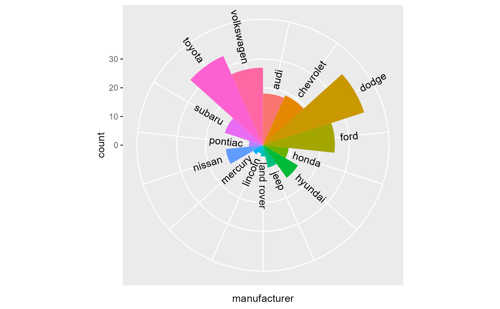

Similar to geom_text(), this geom also generates text but places the
text at an angle so that the text seems aimed towards a point defined by
[xend, yend].
geom_text_aimed( mapping = NULL, data = NULL, stat = "identity", position = "identity", ..., parse = FALSE, nudge_x = 0, nudge_y = 0, flip_upsidedown = TRUE, check_overlap = FALSE, na.rm = FALSE, show.legend = NA, inherit.aes = TRUE )
Arguments
| mapping | Set of aesthetic mappings created by |
|---|---|
| data | The data to be displayed in this layer. There are three options: If A A |
| stat | The statistical transformation to use on the data for this layer, as a string. |
| position | Position adjustment, either as a string, or the result of
a call to a position adjustment function. Cannot be jointy specified with
|
| ... | Other arguments passed on to |
| parse | If |
| nudge_x | Horizontal and vertical adjustment to nudge labels by.
Useful for offsetting text from points, particularly on discrete scales.
Cannot be jointly specified with |
| nudge_y | Horizontal and vertical adjustment to nudge labels by.
Useful for offsetting text from points, particularly on discrete scales.
Cannot be jointly specified with |
| flip_upsidedown | A |
| check_overlap | If |
| na.rm | If |
| show.legend | logical. Should this layer be included in the legends?
|
| inherit.aes | If |
Value
A ggplot2 Layer
Details
The calculated angle is such that the text will be parallel to a
line passing through the coordinates [x, y] and [xend, yend].
The calculated angle is added to the angle angle aesthetic, so that
you can set text perpendicular to that line by setting angle = 90.
These angles are calculated in absolute coordinates, meaning that resizing
the plot will retain the same appearance.
Note
When using this geom to aim text at the centre of a polar plot, make sure the radius range does not have close to zero width.
Aesthetics
geom_text_aimed() understands the following aesthetics (required aesthetics are in bold):
xylabelalphaanglecolourfamilyfontfacegrouphjustlineheightsizevjustxendyend
Learn more about setting these aesthetics in vignette("ggplot2-specs").
Examples
# Point all labels to upper right corner ggplot(mtcars, aes(mpg, wt)) + geom_text_aimed(aes(label = rownames(mtcars)), xend = Inf, yend = Inf)# Point all labels to center of polar plot ggplot(mpg, aes(manufacturer)) + geom_bar(width = 1, aes(fill = manufacturer), show.legend = FALSE) + geom_text_aimed(aes(label = manufacturer), hjust = 0, stat = "count", nudge_y = 2) + scale_x_discrete(labels = NULL) + coord_polar()